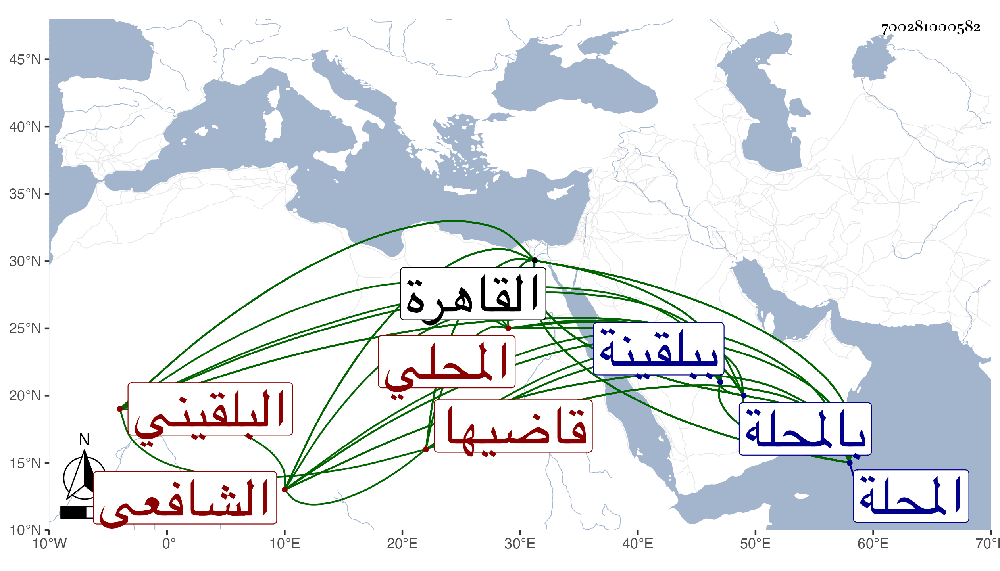

0902Sakhawi.DawLamic.ITO20230111-ara1.EIS1600.700281000582
Biography ID: 700281000582
أحمد بن أبي بكر بن رسلان بن نصير ككبير بن صالح بن شهاب بن عبد الخالق بن محمد بن مسافر الشهاب البلقيني ثم المحلي قاضيها الشافعي ابن أخي السراج البلقيني وأخو البهاء أبي الفتح رسلان وجعفر وناصر الدين محمد ووالد أوحد الدين محمد ويعرف بالعجيمي بضم العين مصغر ولد في سنة سبع وستين وسبعمائة ببلقينة وتوفي أبوه وهو ابن خمس سنين فانتقلت به أمه إلى المحلة فحفظ بها القرآن وصلى به ثم تحول إلى عمه السراج بالقاهرة فحفظ العمدة والمحرر وألفية ابن مالك وبعض المنهاج الأصلي ومن أول التدرب له إلى الفرائض وبحث عليه في الفقه وأصوله وكذا على أخيه البهاء أبي الفتح وفي النحو على سرحان المالكي إمام الصالحية والمحب بن هشام وحضر دروس الأبناسي والقاضي ناصر الدين بن الميلق والبدر الطنبذي بل قرأ على الشهاب الأذرعي درسا واحدا لما قدم عليهم القاهرة وكان يقول أيضا أنه سمع على أبي اليمن بن الكويك والمعين عبد الله قيم الكاملية والفرسيسي وابن الملقن ثم عاد إلى المحلة في سنة أربع وثمانين وسبعمائة فأخذ في الفقه أيضا عن قاضيها العماد الباريني وناب في الحكم بها عن قاضيها العز عبد العزيز بن سليم بالتصغير جد المحب بن الإمام لأمه ثم بالقاهرة عن ابن عمه الجلال البلقيني مع إضافة عدة قرى إليه بل ولي القضاء الأكبر بالمحلة سنة عشر وثمانمائة عنه وعن من بعده إلى سنة ثمان وثلاثين سوى تخللات يسيرة وأثرى وصنف في الفرائض كتابا سماه الروضة الأريضة في قسم الفريضة قرضه له ابن عمه والجلال بن خطيب داريا وكأنه أخذها عن سرحان ، وكان إماما فقيها عالما مفننا وقورا عاقلا يوصف بالدهاء والحيل ويذكر بين غالب أهل بلده بسوء السيرة في القضاء وغيره مع قول بعض الثقات أنه ما أخذ عماله في مال يتيم قط وكان يحكى أنه أسلم على يديه نيف وثلاثون نفسا . مات بالمحلة في عصر يوم الاثنين ثالث عشر جمادى الأولى سنة أربع وأربعين ودفن صبيحة يوم الثلاثاء في مشهد حسن صلى عليه عمر ولده وهو المستقر في قضاء المحلة بعده وأثنوا على الميت خيرا رحمه الله وإيانا . ومن حكاياته عن عمه السراج أنه حكى أن الشيخ عيسى بن الشيخ عمر النفياي نزل البحر يتوضأ فرأى الجن وهم يقولون :
| ليت الغنى لو دام | وشملنا يلتام |
وممن ذكره شيخنا في أنبائه وابن فهد وآخرون .
